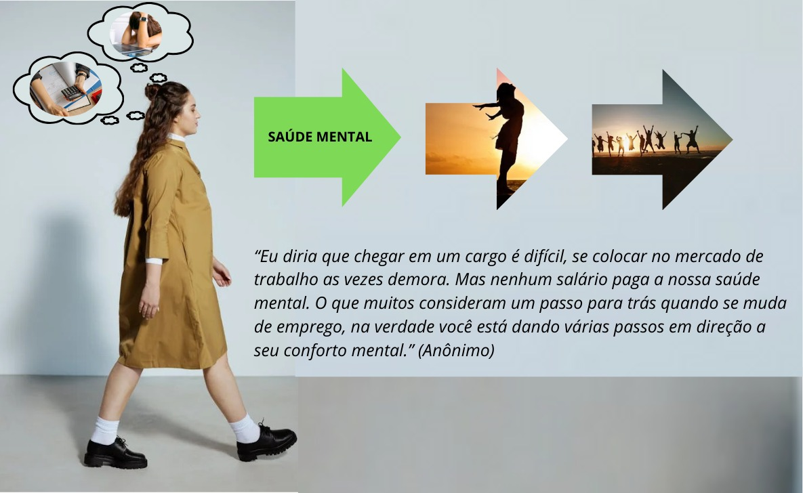

Este ambiente foi desenvolvido com a finalidade de prestar apoio emocional a pessoas que estão enfrentando desafios
relacionados a saúde mental, auxiliando assim, o retorno às atividades no mercado de trabalho e sociais pós-pandemia,
além de proporcionar um ambiente acolhedor.
Inspiração para a Recuperação
Depoimentos de Superação
